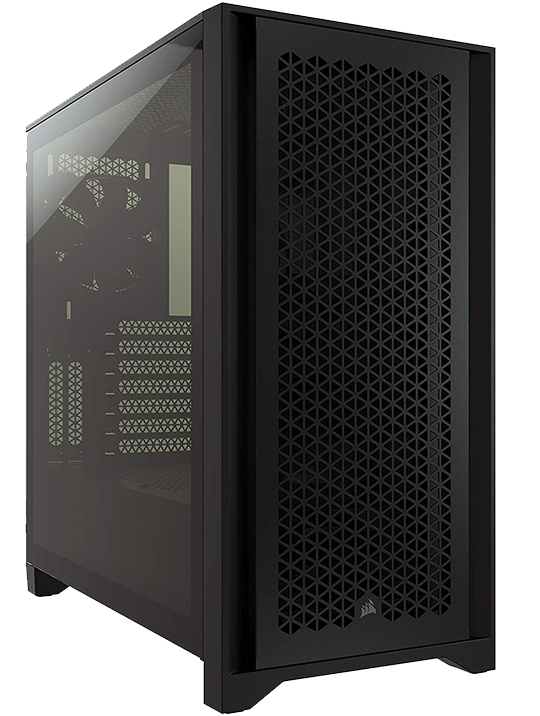

NECESSITIES
These are the necessary parts of your PC.
They transfer your input to your PC's core parts
They transfer your PC's output to the world
The Face
The term "monitor" is often used synonymously with "computer screen" or "display."
The monitor displays the computer's user interface and opens programs, allowing the user to interact with the computer, typically using the keyboard and mouse.
Connected to Video Card
PRO TIP: During a bad game session. Don't punch it.
The Left Hand
As the name implies, a keyboard is basically a board of keys.
Along with the mouse, the keyboard is one of the primary input devices used with a computer.
The keyboard's design comes from the original typewriter keyboards, which arranged letters and numbers in a way that prevented the type-bars from getting jammed when typing quickly.
This keyboard layout is known as the QWERTY design, which gets its name from the first six letters across in the upper-left-hand corner of the keyboard.
PRO TIP: Monthly clean the underneaths of your keyboard to the stucked snacks
Most Functionally working keyboard & mouse from a trusted brand will do just fine
But if you want gaming keyboard & mouse recommendations check out COOL STUFF
The Right Hand
While most people don't want to see a mouse running around in their home, they typically don't have a problem seeing one sitting by their computer.
This is because, along with the keyboard, the mouse is one of the primary input devices used with today's computers.
The name comes from the small shape of the mouse, which you can move quickly back and forth on the mouse pad, and the cord, which represents the mouse's tail.
Of course, if you are using a wireless mouse, the analogy does not work so well.
PRO TIP: Use a mouse pad
The Voice
Speaker
Speakers are one of the most common output devices used with computer systems.
Some speakers are designed to work specifically with computers, while others can be hooked up to any type of sound system.
Regardless of their design, the purpose of speakers is to produce audio output that can be heard by the listener.
PRO TIP: Good for general purpose and asserting your dominance
Headphones
Headphones are small speakers that can be worn in or around your ears.
Traditional headphones have two ear cups attached by a band that is placed over your head.
Smaller headphones, often called earbuds or earphones, are placed inside the outer part of your ear canal.
PRO TIP: Good for privacy and video game immersion.
You can also choose earphone/earbuds for the same purpose and for portability
but usually the sound quality is lesser
The Bag
Nearly all personal computers come with an internal hard drive.
This drive stores the computer's operating system, programs, and other files.
For most users, the internal hard drive provides enough disk space to store all the programs and files.
However, if the internal hard drive becomes full or if the user wants to back up the data on the internal hard drive, an external hard drive may be useful.
PRO TIP: Leave your internal storage alone.
The Shell
The protector of your core parts.
Take the importance of the airflow so your PC won't overheat.
Take the importance of the size so your parts can fit all inside.
| High-End | Mid-End | Low-End + Power Supply |
|---|---|---|
|  |

|

|